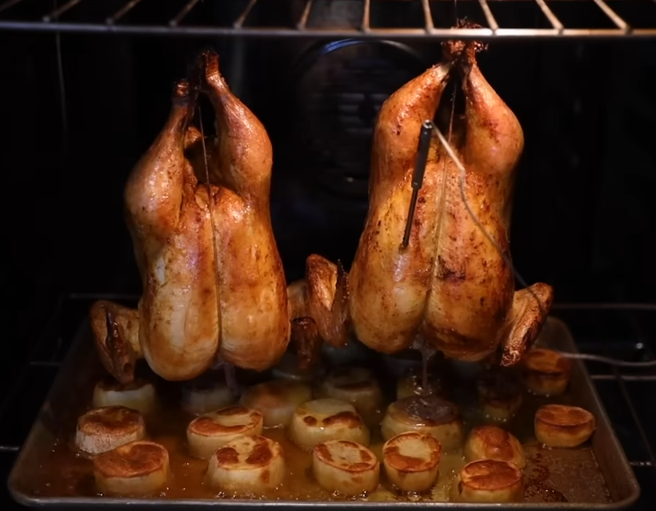

Hanging Roast Chicken
Description
An easy way of imitating rotisserie chicken at home. Results are tender, juicy and well seasoned.
Recipe serves 8.
Ingredients
- 2 4lb chickens
- 3-4lb baking potatoes
- 1 lemon
- salt
- garlic powder
- paprika
- oil
- chicken stock
Steps
- Place a rack over a sheet pan and put the chickens on top. Heavily coat the chickens with salt, garlic powder and paprika on all sides. Don't worry if a lot of seasoning falls onto the pan underneath. Move the whole rack assembly to the refrigerator and leave the chickens in there, uncovered, for 24-48 hours.
- Peel the potatoes and cut them into 1.5 inch (4 cm) slices.
- Prepare the oven by positioning one rack on the very top, and one on the very bottom. If you have a third rack, take it out. Heat the oven to 425 F / 220 C, ideally on a convection setting. NOTE: This temp is just a starting place. You may need to turn the heat up or down as you roast, depending on how the skin is looking.
- Using butcher's twine, tie the chicken's legs together and send a supporting loop down around the length of the chicken. Loop large metal S-hooks through their legs (you can bend them out of a coat hanger). Put an oven-safe probe thermometer into the deepest part of the breast, and lightly oil the chickens on all sides. NOTE: Oiling is optional. I actually can't decide which way I like it best. Oil makes for darker skin, but no oil makes for crispier skin, in my experience.
- Take the chickens off the rack, and get rid of the rack while retaining the sheet pan underneath. Put the potatoes onto the sheet pan, making sure they're evenly distributed in one layer. Put the rack of potatoes on the bottom oven rack, and hang the chickens with the S-hooks to the top rack. Pour enough chicken stock into the sheet pan to come 1/4 of the way up the potatoes.
- Roast until the skin is brown and the internal temperature is 165 F / 74 C, about an hour. You may need to increase the heat to make sure the skin is brown. Every 15 minutes, move the rack slightly so that all the potatoes get some time directly under the dripping chickens.
- When the chickens are done, use an oven mitt to unhook them. Rest them on a clean cooling rack. Take the potatoes out, flip them, then put them back in the oven on the top rack and roast until the tops are starting to go crispy. You might want to turn on the broiler (grill), but if you do, watch them like a hawk.
- When done, the potatoes may need some additional salt. Plate with some carved chicken and a side salad, and eat.